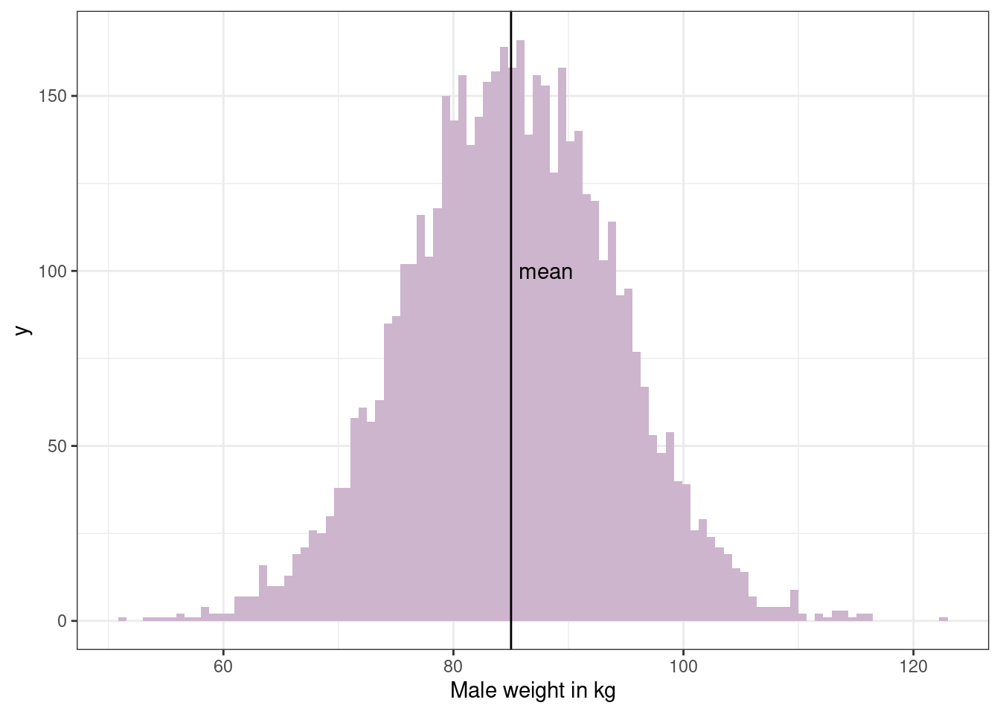
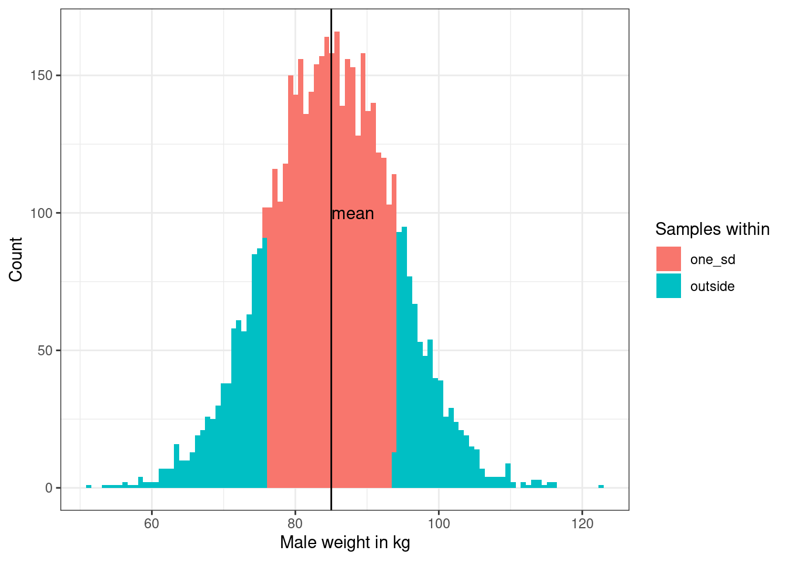
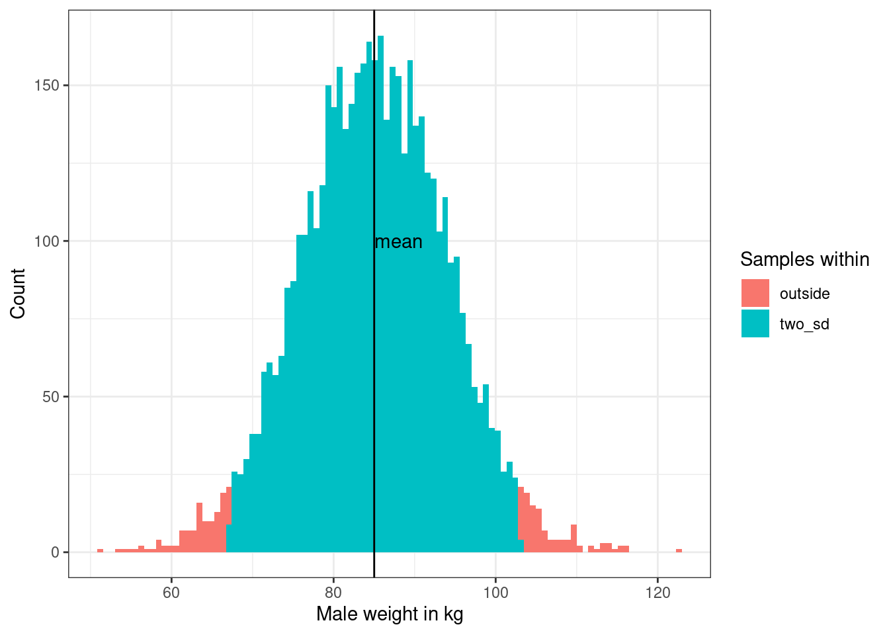

Chapter 2 Hello bookdown
All chapters start with a first-level heading followed by your chapter title, like the line above. There should be only one first-level heading (#) per .Rmd file.
2.1 A section
All chapter sections start with a second-level (##) or higher heading followed by your section title, like the sections above and below here. You can have as many as you want within a chapter.
2.2 Normal Distribution
2.2.1 First, a bit of data wrangling
Let’s load the weight-height.csv and have a quick look at the data
library(tidyverse)
library(glue)
# Load csv data
weight <- read_csv("weight-height.csv")
weight## # A tibble: 10,000 × 3
## Gender Height Weight
## <chr> <dbl> <dbl>
## 1 Male 73.8 242.
## 2 Male 68.8 162.
## 3 Male 74.1 213.
## 4 Male 71.7 220.
## 5 Male 69.9 206.
## 6 Male 67.3 152.
## 7 Male 68.8 184.
## 8 Male 68.3 168.
## 9 Male 67.0 176.
## 10 Male 63.5 156.
## # … with 9,990 more rowsWe will analyse the male data, so just extract male data & add a new column with weight in kg units
# Filter data for male samples, convert lb to kg
weight_male <- weight %>%
filter(Gender == "Male") %>%
mutate(weight_kg = Weight/2.20)
weight_male## # A tibble: 5,000 × 4
## Gender Height Weight weight_kg
## <chr> <dbl> <dbl> <dbl>
## 1 Male 73.8 242. 110.
## 2 Male 68.8 162. 73.8
## 3 Male 74.1 213. 96.7
## 4 Male 71.7 220. 100.
## 5 Male 69.9 206. 93.8
## 6 Male 67.3 152. 69.2
## 7 Male 68.8 184. 83.6
## 8 Male 68.3 168. 76.4
## 9 Male 67.0 176. 80.0
## 10 Male 63.5 156. 71.1
## # … with 4,990 more rows# Compute standard deviation & mean for male weight
sd_weight = round(sd(weight_male$weight_kg),2)
mean_weight = round(mean(weight_male$weight_kg), 2)
glue('sd_weight is -> {sd_weight} kg')## sd_weight is -> 8.99 kgglue('mean_weight is -> {mean_weight} kg')## mean_weight is -> 85.01 kg# Simple histogram to visualise male weight distribution
weight_male %>%
ggplot()+
geom_histogram(aes(x=weight_kg), bins = 100, fill = "thistle3")+
xlab("Male weight in kg")+
geom_vline(xintercept = mean_weight, linetype="solid",
color = "black", size=0.5)+
annotate("text", x=mean_weight+3, y=100, label= "mean", color = "black")+
theme_bw()
# Create new df with labels for male weight within 1, 2, and 3-sd from mean weight
weight_male_with_sd <- weight_male %>%
mutate(one_sd = case_when(weight_kg > mean_weight - sd_weight &
weight_kg < mean_weight + sd_weight ~ 'one_sd',
TRUE ~ 'outside'),
two_sd = case_when(weight_kg > mean_weight - 2*sd_weight &
weight_kg < mean_weight + 2*sd_weight ~ 'two_sd',
TRUE ~ 'outside'),
three_sd = case_when(weight_kg > mean_weight - 3*sd_weight &
weight_kg < mean_weight + 3*sd_weight ~ 'three_sd',
TRUE ~ 'outside')
)
weight_male_with_sd## # A tibble: 5,000 × 7
## Gender Height Weight weight_kg one_sd two_sd three_sd
## <chr> <dbl> <dbl> <dbl> <chr> <chr> <chr>
## 1 Male 73.8 242. 110. outside outside three_sd
## 2 Male 68.8 162. 73.8 outside two_sd three_sd
## 3 Male 74.1 213. 96.7 outside two_sd three_sd
## 4 Male 71.7 220. 100. outside two_sd three_sd
## 5 Male 69.9 206. 93.8 one_sd two_sd three_sd
## 6 Male 67.3 152. 69.2 outside two_sd three_sd
## 7 Male 68.8 184. 83.6 one_sd two_sd three_sd
## 8 Male 68.3 168. 76.4 one_sd two_sd three_sd
## 9 Male 67.0 176. 80.0 one_sd two_sd three_sd
## 10 Male 63.5 156. 71.1 outside two_sd three_sd
## # … with 4,990 more rows2.2.2 Now some fun plotting
# Visualise males within 1-sd from mean weight
weight_male_with_sd %>%
ggplot(aes(fill = one_sd))+
geom_histogram(aes(x=weight_kg), bins = 100)+
xlab("Male weight in kg")+
ylab("Count")+
labs(fill='Samples within') +
geom_vline(xintercept = mean_weight, linetype="solid",
color = "black", size=0.5)+
annotate("text", x=mean_weight+3, y=100, label= "mean")+
theme_bw()
# Visualise males within 2-sd from mean weight
weight_male_with_sd %>%
ggplot(aes(fill = two_sd))+
geom_histogram(aes(x=weight_kg), bins = 100)+
xlab("Male weight in kg")+
ylab("Count")+
labs(fill='Samples within') +
geom_vline(xintercept = mean_weight, linetype="solid",
color = "black", size=0.5)+
annotate("text", x=mean_weight+3, y=100, label= "mean")+
theme_bw()
# Visualise males within 3-sd from mean weight
weight_male_with_sd %>%
ggplot(aes(fill = three_sd))+
geom_histogram(aes(x=weight_kg), bins = 100)+
xlab("Male weight in kg")+
ylab("Count")+
labs(fill='Samples within') +
geom_vline(xintercept = mean_weight, linetype="solid",
color = "black", size=0.5)+
annotate("text", x=mean_weight+3, y=100, label= "mean")+
theme_bw()# Calculate % of males within 1,2, and 3-sd from mean weight
weight_male_with_sd %>%
count(one_sd == "one_sd") %>%
mutate(percent = n*100/sum(n)) %>%
rename_with(.cols = 1, ~"within_one_sd")## # A tibble: 2 × 3
## within_one_sd n percent
## <lgl> <int> <dbl>
## 1 FALSE 1564 31.3
## 2 TRUE 3436 68.7weight_male_with_sd %>%
count(two_sd == "two_sd") %>%
mutate(percent = n*100/sum(n))%>%
rename_with(.cols = 1, ~"within_two_sd")## # A tibble: 2 × 3
## within_two_sd n percent
## <lgl> <int> <dbl>
## 1 FALSE 234 4.68
## 2 TRUE 4766 95.3weight_male_with_sd %>%
count(three_sd == "three_sd") %>%
mutate(percent = n*100/sum(n))%>%
rename_with(.cols = 1, ~"within_three_sd")## # A tibble: 2 × 3
## within_three_sd n percent
## <lgl> <int> <dbl>
## 1 FALSE 22 0.44
## 2 TRUE 4978 99.6